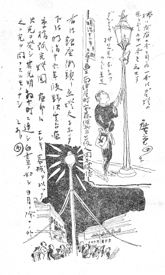
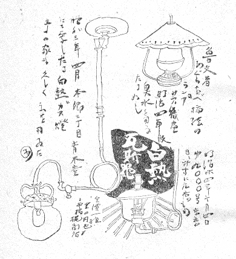
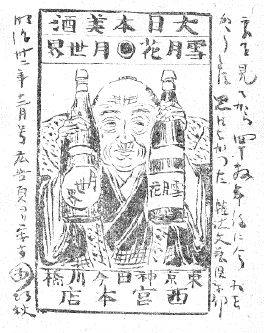
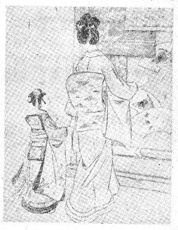
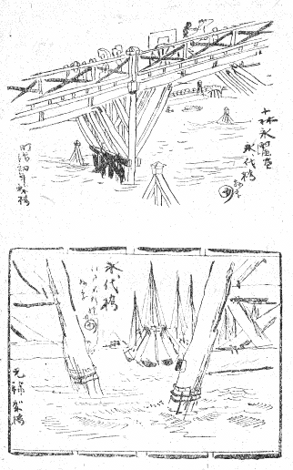
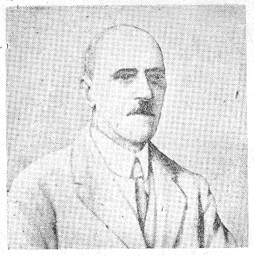
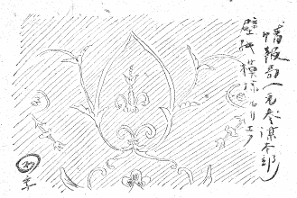

一、東京「パースペクチヴ」
亡友岸田劉生が昔、そのころ東京日日だつた今の毎日新聞へ、東京繁昌記の画文を寄せて、「新古細句銀座通」＝しんこざいくれんがのすぢみち＝と題する戯文をものしたことがある。（昭和二年）戯文といつても筋の通つたものだし、殊に絵は出色のものだつたが、仕事の範囲の相当手ひろかつた故人にしては珍らしく、印刷ものにこと寄せて「さしゑ」の仕事を遺したものとしては、これらがあと先きに例のない逸作であつた。
編輯部から嘱されて「東京の風俗」といふものを、その岸田の轍に学び、自分の絵と文とで書くけれども、掲題の「東京の風俗」を僕は「パースペクチヴ」で書くつもりである。「バーズ・アイ・ビュウ」には扱はない。
――東京「バーズ・アイ・ビュウ」ならば材料を広く横にとらなければならないが、パースペクチヴで、縦に行くならば、材料は狭くとも主意は達しようと、勝手な解釈に。
パースペクチヴは古風にいふ「遠見」といふほどの意味の、その眼鏡をのぞいて向うを見る場合は、文意の基づくところを多少考証めかして、在りし東京の一断面を水平線上の焦点距離へ成るべくカツチリちゞめて見たい意味。
論文でも市街政策でも何でもないが、たゞ筆のすさびだけには終らない、何か読者に「そんなものかなアー」と思はすものがあれば幸だと思つてゐる。
東京といつても「お広うござんす」こといふまでもなく、これをたゞ文献の上だけから探るとすれば、ペリー提督の秘書官にもよく江戸通志は机の上から書けるわけだらう。しかし実感の上からする場合は、栃面屋弥次郎兵衛も熟知するところは神田の八丁堀界隈だけのことゝなる。ぼくも日本中で東京だけしか知らない、眼界の極く狭いものだけれども、されば「東京」も今の大東京となつては、どれ程知つてゐるかといふと、実は却つて知らない部分の方が多い位である。元の山の手一帯から新「東京」へ編入された旧郊外地帯の大部分にかけて、文字通りさつぱり「東西南北」の見当のつかないところが多い。
「ぼく」の東京はさういふ知らない部分で一杯である。それも上からの「バーズ・アイ・ビュウ」で行けば、眼界はそれらにも届くであらうが、横からの「パースペクチヴ」でのぞくためには、知らないところは見えない。漸く眼鏡からのぞける範囲はといへば、こんど七十年ぶりに区名が変つていよいよなくなつてしまつた、日本橋、京橋、あるひは下谷、浅草などといふ一廓に限られるだらう。人体で云へばほんの爪先きぐらゐのものだ。
パリへ行くと今でも「猫の首くゝり横町」などといふ古い名が町に残つてゐるさうである。何故東京も両国のトラや横丁であるとか、だいち、ぐんだいなどといふ名を、少しは残さないかと、まあ、「思ひ」はするものの、二度の焦土に向つてそんなことをあげつらふ料簡は、持合せない。――が、兎に角、私の東京は、狭い上に、剰さへ、大変化をした。
私は愛古家であつても懐古家とはかぎらないので、万事につけて「昔を今に成すよしもがな」とは思はない。――もつとも現在のわれらはすこぶる貧困である。町を歩いても、うつかり「円タク」を呼ぶぜいに至れないし、飲食店のア・ラ・カルトも、ふところ勘定抜きといふ自由奔放はやれないから、思へば東京生活も、昔は「やりが迎ひに来た」もので、美術館から上野の山下まで下りるにも車を拾つたものだし、頼まずとも町の行きずりにモカのコーヒーが飲めたものだつた。
この意味では「昔を今に成すよしもがな」かも知れない。舌頭や足の先きのことばかり云ふのではない………
二、お江戸日本橋
東京がいつ帝都となり又「東京」といふ名になつたか、といふことは、衆知の八十年来の史実で――今さらぼくが喋々するまでもない――今では京都を西京といふ人も、その習慣もなくなつたやうだが、この「西京」こそは、新「東京」に対して、明治初年ごろに庶民の間で旧都を呼びならした、昔をいとほしむ一つの愛称であつたゞらう。
東京もその発音は正規の読み方をされずに「とうけい」となまつて呼ばれる場合が少くなかつた。これも今ではさう呼ぶ人も習慣もなくなつたであらう。
「お江戸日本橋……」といふ道中うたが伝唱される。これもその後は――といふのは明治以後は――聞くことも少なくなり、雑曲ながら関西の「京の四季」こちらの「夕暮」「海晏寺」などと並んで、風物を詠じた写生唄の「古典」の一つとなつてゐる。
一ころ寄席の芸で、はなしかの雷門助六が立つて踊る高座のお江戸日本橋は、「桑名の殿様」と共に、一芸のものだつた。派手な円遊の「綱は上意」や、飄逸喜ぶべき三好の「柳」とは違つて、妙な言葉ながら「本格的」ともいふべき、そのくせ動きをほとんど座布団のたけ幅一尺外へは出さない、内バの足どりで、槍をふるつて見せる、と、大道狭しと行く大名行列もそこにはうふつとするのである。――つまりほう間の座敷芸に演じたところを、高座に移した姿であつた。
いはゞ踊りを盆栽に仕生けたものともいへるだらう。――今日ではほとんど見られない。
序でだから書くけれども、近年「小うた」といはれるものに必ず振りがついて、特に小うた振りと称する小舞が行はれるが、小座敷あるひは小舞台の芸なるに拘らず、例へばその「こよひは雨」「心でとめて」など、新ものゝ「小猿七之助」等申すにおよばず、何れも動きをかへつて派手に大きくとるのは、大きくなければ絵でないと思つてゐる文展の出品画のやうにをかしなことであつた。かつぽれの梅坊主なども、戸外では立てものゝ相当大きなやあとこせを旗印しにはでに演つたものが、座敷芸の場合には、「深川」「坊さま二人で」の件りなどさへ、たゝみ一畳と動かずにさしで二人十分に踊り切つたものだ。客席で立つほう間の踊りは、その辺に料理皿小ばちもある関係の畳半畳とは動かずに済む身ぶり足どりでなければならなかつたと、桜川長寿が話してゐた。
小うた振りも「初出」などは足もとさへたてまへのはり木の上を踏む心で行けば、三尺四方以内で――たてに深く――踊り切れるものと聞いた。これはやまと屋のいつたことである。
諸芸の風も求心的な深みや味を主意としたもの（江戸ぶり）は衰滅して、遠心的に大きく動かうとする風（西洋風）が専ら行はれるものであらう。それが良く大きく行く場合はいゝが、やゝもすると内容はバサけ勝ちになり、味の浅さに対して、概して近年人が一般に鈍感になつたことは、否めないやうである。
三、道中「上り」「下り」の唄
お江戸日本橋の道中うたは、本文通り日本橋を朝明けの七ツ（四時）に立つて、高輪へ来てちやうちんの火を消す。それから段々と西へ「京」へ着くまでの東海道中を、十八節に仕切つた、相当長いものであるが、今となつては、一九の膝栗毛や、川柳の末摘花を完全に解説出来れば、堂々たる文学ハカセだといはれるやうに、このうたも完全に解説が附けられゝば、取つて以つて広重の保永堂版版画にも裏附けとなる、文献が出来上るわけだらう。
ましてこの道中唄には、先づ江戸から京へと「上り」があると同時に、向うからの「下り」もある。「上り」はやゝ一般にも伝唱されるが「下り」はほとんどいん滅してゐた。それを掘り出して、すでに廿年かれこれの昔とはなつたが、ある人から私にうつしを寄託されたものがある。この機会にそれを「虫ぼし」のわけで上下そろへて復刻しておくのは、古物保存の意味だけでなく、「その行文を味ふ」面白さからいつても、私の手記の文章などより数等上の、よきよみものとなるだらう。節はラヂオなどにこの頃でも時々放送されるから、かへつて歌の本文よりなじみが多いだらう。
一、お江戸日本橋七ツ立、初上り、あゝこりやこりや。行列揃へて、あれわいさのさ、こちや、高輪、夜明けの、提灯消す。こちやえ、こちやえ（以下はやし略）。
二、恋の品川女郎衆に、袖ひかれ、のりかけお馬の鈴ヶ森。こちや大森細工の松だけを。
三、六郷あたりで川崎の、まんねんや、鶴と亀との米まんぢゆう。こちや神奈川いそいで保土ヶ谷へ。
四、痴話で口説は信濃坂、戸塚まへ、藤沢寺の門前で、こちやとどめし車を綱でひく。
五、馬入わたりて平塚の、女郎衆は、大磯小磯の客を引く。こちや小田原相談熱くなる。
六、登る箱根の御関所で、ちよいと捲くり、若衆のものとは受取れぬ。こちや新造ぢやないかとちよいと三島。
七、酒も沼津に原つゞみ、吉原の、富士の山川白酒を、こちや姐さん出しかけ蒲原へ。
八、愚痴を由井だす薩多坂、馬鹿らしや。絡んだ口説きも興津川。こちや欺まして寝かして恋の坂。
九、江尻つかれて気は府中、はま鞠子、どらをうつのかどうらんこ、こちや岡部で笑はゞ笑はんせ。
十、藤枝娘のしをらしや、投げ島田、大井川いと抱きしめて、こちやいやでもおうでも金谷せぬ。
十一、小夜の中山夜泣石、日坂の、名物わらびの餅を焼く、こちやいそいで通れや掛川へ。
十二、袋井通りで見附けられ、浜松の、木陰で舞坂まくり上げ、こちや渡舟 に乗るのは新井宿。
十三、お前と白須賀二タ川の、吉田やの、二階の隅ではつの御油、こちやお顔は赤坂藤川へ。
十四、岡崎女郎衆はちん池鯉鮒、よくそろひ、鳴海絞りは宮の舟、こちや焼蛤をちよいと桑名。
十五、四日市から石薬師、願をかけ、庄 野悪さをなほさんとこちや亀山薬師を伏し拝み。
十六、互ひに手を取り急ぐ旅、心関 、坂の下から見上ぐれば、こちや土山つゝじで日を暮す。
十七、水口びるに紅をさし、玉揃ひ、どんな石部のお方でもこちや色に迷うてぐにやぐにやと。
十八、お前と私は草津縁、ばちやばちやと、夜毎に搗いたる姥ヶ餅。こちや矢橋で大津の都入り。
行間に節もろとも淡い旅愁の漂ふ、そしていつもほのかにワイセツな、これを形に凝らせば、所詮は広重の名品が生れる東海道中のわびであらう。道中筋の松並木はあたら戦争さわぎで切られてしまつたとしても、松籟の余韻は「日本」がある限りなくならないものである。道中の「下り」は――
一、花の都は夜をこめて、逢阪の、あゝこりやこりや、夕つげ鳥に送られて、こちや、名残をしくも、大津まで、こちやえ、こちやえ。
二、瀬田の長橋打渡り、近江路や、まのゝ浦風身にしみて、こちや草津、石部の水口へ。
三、土山行くのをふりすてゝ、情山、心細くも坂の下、こちや人目の関をば忍びつゝ。
四、往来 をまねくをばな咲く、野尻より、亀山、庄野、石薬師。こちや追分行くのは四日市。
五、かひを桑名の渡しより、尾張なる、熱田の宮を伏しをがみ、こちや鳴海、池鯉鮒の染尽し。
六、岡崎通りて藤川の、流れなる、赤坂越えて御油までも、こちや吉田、二タ川、白須賀へ。
七、心新井の渡船、帆をあげて、扇開いて、舞坂の、こちや浜松越えて見附けらる。
八、袋井、掛川打過ぎて、日坂の、小夜の中山夜泣石、こちや菊川渡りて、袖ぬらす。
九、いはで焦るゝ金ヶ谷で、思はずも、花の女郎衆は大井川、こちや二八ばかりの投げ島田。
十、花のゆかりの藤枝に、思ひきや、かゝる岡崎真葛原、こちや夢か現か、宇津の女で。
十一、津田の細道はかゆかず、花染の、衣物の裾を振りはいて、こちや鞠子府中の賑ひな。
十二、江尻、興津の浜辺より、はるばると、三保の松原右に見て、こちや浮世の塵を薩多坂。
十三、我元由井の乱れ髪、はらはらと、蒲原かけて降る雪は、こちや富士の裾野の吉原へ。
十四、原や沼津の三島への、朝露に、かけ行く先は小笹原、こちや越え行く先は箱根山。
十五、雲井の花をわけすてゝ、小田原の、大磯小磯を打過ぎて、こちや平塚女郎衆の御手枕。
十六、花の藤沢過ぎかねて、神の露、ちゞに砕いて戸塚より、こちや保土ヶ谷までの物思ひ。
十七、思ふ心の神奈川や、川崎を、通れば、やがて六郷川、こちや大森小幡で鈴ヶ森。
十八、酔ひも鮫洲に品川の、女郎衆に、心引かれて旅の人、こちや憂を忘れてお江戸入り。
小田原あたりからうたの足どりが次第に東へ迫るにつれて文句も冴えて来る、といつても、この「下り」のうたは、「上り」に劣る。あるひは本来「上り」のうたがあつて、あとから「下り」を作り添へたものかもしれない。「お江戸日本橋」とは人がいつても、「花の都は……」では何のことかわからないのは、ひつきやうその作品が消えるか残るかの正直な出来栄えの違ひで、「いろはにほへと」の数へうたは無くならないが、「とりなくこゑす」は殆んどもうたれも口にしない。それにしても「上り」うたの中の、第六節「登る箱根のお関所で……」の件りなどは、情景躍動見るべし、浮世絵にもこの活画面は好個の題材なるに拘らずちよつと見かけない。道中うた作者の勝である。
四、堀端
徳川氏は覇業を達成すると、慶長八年に江戸の大土木を起し、日本橋もこの時その名と実の出来た歴史となつてゐるが、翌年（西暦一六〇四年）この橋を里程の基本として三十六町一里の塚を四方へ作り、日本橋からの東西南北を東海道、中仙道、その他甲州街道、奥州街道、下総街道……とした。以来旅立ちは七ツにしても八ツにしても「お江戸日本橋」から立つのが定となつた。
徳川氏が、覇を成すや、土木を盛んにして江戸を中心に四通八達の道路を修正したのは、ローマが西欧大陸を定めるとまづ地域全体に渉つて道路を通したのと似てゐる。
東西実用主義の双へきと見て然るべきものだらう。家康は江戸城の堀を相するに当つて、その西に面する方角には堅固な石垣を築き上げることをしたが、東面は
東に面する方角から攻手のかゝらう理由は無い。あるひはこの方角に防備の理由はないとする心だつたといふ。
それはとにかくとして、桜田門から半蔵門あたりへかけて曲折する堀にのぞむ城に、石垣のない、青草の柔かなスロープだけを見せた景観は、先にフランスのクローデル大使が、世界第一等の眺めの一つと推賞したと聞くが、誰しも同感であらう。
木下杢太郎（太田博士）も、世界中方々廻つて見て、さて、やはり一番なじみの良いのは、この堀端だと、参謀本部の前のところで、青い水を見下ろしながら、ぼくに話した。――「堀」はまづ焼けなかつたが、参謀本部、すなはち、戦争最中の情報局は、跡形もなく亡滅して了つた。
この建物はなかなか面白い――建築として第一に面白く、第二には、その数々の歴史から見て面白い――東京有数の記念物だつたが……これについては項を改めて書くことにしよう。
「お江戸日本橋七ツ立」を持つて廻るけれども、七ツの午前四時にあすこを立つたならば、さぞ足許の暗いことだつたらう。一体東京も、昔は夜ともなれば、相当暗かつたものらしい。江戸に至つては、さらに暗かつたらう。御府内の「暗さ」がうなづけなければ、辻斬りは、わからないやうである。明治も相当深くなるまで、依然として、夜は黒々としたものだつたらしい。小林清親の弟子井上安治の木版画を見ても、沢山ある秀れた安治（号探景）の東京名所絵の中で、優作の一つと考へられる、駿河町の、今の三越の角のところを写した夜景など、――さしづめ我々には、いま防空警報が出たばかりといつた景色に見える。
月光をこの絵から取り去つたならば、たちまち真のヤミ夜である。
かういふ東京の漆黒は、幸か不幸か、われわれ年輩のものは、初めてこんどの事件で体験した。
高山樗牛が「月夜の美感について」論文を書いたのは、明治卅二年であつたが、少くも明治もそのころほひは、遊士樗牛をして、東京にゐてさへ、夜空を仰いで「月夜の美感」について考へさせた程、身辺は暗かつたものらしい。
これが大正、昭和になると、東京では殆んど「月」は、あるひは月夜は――その美感を関知出来ないまで、殆んど至るところ、明々とした、夜の都となつた。
五、明暗
東京の町は昔暗かつたやうである。明治も深くなつて、末年に近づいても、その暗さは、ひところの大正、昭和の明るさになれつくしたわれわれからは、想像もつかない程のものがあつたらしい。
電燈会社が成立つて、一般に電燈を点するやうになつた年をこの明るさ――白熱燈――の紀元とすれば、それは明治二十年のことなので、私などの生活は、その勘定からゆけば（私、明治廿六年生）生れおちると「電燈の光」の中に包まれたやうだ。しかし実際上は、私の少年時代は、寝室など行燈だつたし、――大正の人ともなれば行燈生活は全然知らないであらう――家の照明はガスを主として、これを石油ランプで補つてゐた。
ガスといつても、点火すると火口からパツと直かに三角形の火を吹き出す、原始的なもので、それでもぼくの家などは、夜の「明るさ」を要求した商売屋（牛肉店）だつたので、精々明るくしてあつたのだらう。補助ランプのために男が特に一人、これにかゝりきりでゐた。ぼくも普通より「明るさ」になれてゐたやうである。
――しかし、夜の光は、今から思へば乏しかつたものらしい。
ぼくは昭和三年に「パンの会」の油絵を描いたが、パンの会は明治四十年代早々に催された文人画家交歓の会合で、木下杢太郎氏あたりが主唱となり、メムバーは相当広範囲に渉つて、谷崎さんも出席したし、永井荷風さんあたりも顔を見せたやうだ。ぼくは――ぼくの年齢として――身親しくはこの会合を知らない。ぼくとは四つ違ひの兄貴が当時文学青年としてこれに出席したところから、幾分空気を親しく見聞してゐた間接の関係である。
萱野二十一（郡虎彦氏）あたりが、二十一の名の通り、出席の最年少級だつたらう。小網町の川岸の西洋料理店などを会場に選んで、長夜の会合を開いた。
これにさきだち、ガスには（その歴史の示すやうに明治卅年から卅五年までのところで）例の青白いマントルが一般となつてゐたから――ぼくの家などもさうだつた――パンの会も、照明は会場に数個燈つてゐたといふガスマントルの光を主力として、これに装飾として、ほほづき提燈の綱を天井から下つたガスの管から管へと張り渡し、燈入りの提燈をいくつかぶら下げた。（杢太郎氏の話）
まづこれで会場は相当明るかるべきはずである。ぼくはその見当で、その情景を想像しながら絵に描いたが――なんとこの時、この絵を描いた（昭和三年状態の）ぼくの仕事場の夜業の電気の燭光が、昼光燭といふ球の、三燈合はせて六百燭光だつた。画面の近くへ電球を近寄せて見れば、条件の悪い昼間よりモノはよくわかる程である――それで出来上つた僕の画面の明るさ加減は、どうしても「まだいけない、本当は君の絵よりもずつと会場は暗かつた」と杢太郎氏にいはれて、「想像」の見当もつきかねた。絵はこれ以上、暗くしてしまつては、カンジが出しにくいに拘らず、なんでも、パンの会場では、誤つてテーブルの下にフォークを落したのに、すぐテーブルの下をのぞいてみても、真暗で――あの光るものが――何処へ飛んだか、見当がつかなかつた程だといふ。
六、ガス燈
近ごろでは特に停電用といふのでアセチレンガスのあかり（名づけてカーバイト・ランプ）を町で売つてゐるが、これはその独得な臭気もろとも昔は往来で縁日商人の使ふものときまつてゐた。これを室内照明に使ふのは、アセチレンガスが昇格したのでなければ、使ふ人間が下落したのである。多分後者だらう。
近代的な強い光の照明道具の中では、ガスの燈火が一番最初に出来たものだが、東京ガス会社の成立が明治十八年とある。会社が出来て初めて一般にガスを引けることになつた。
これより前に弧光燈といふのがあつて、これは白熱燈にならない前の電燈、いはゆるアーク燈である。その二千燭光のものを銀座の大倉組の前に点火したことは（明治十五年）――わざわざこれを見に見物人が出て……もちろん、見物人は遠近挙つて毎夜銀座に雲集し、これは当時の三枚続きにも残るやうに、町の事件の一つだつた。
ガス燈の光りぞ今は頼みなる雲かくれにし夜半の月かな――。
――その見物人の一人は、わざわざこの「二千燭光」の下で地面に針を落して見て、それをちやんと拾ふことが出来た、と、なかなかしやれたルポルタージュを示す始末だつた。
――それにつけて思ひ起すのは、わりに近年のこと、東海道を超特急の「ツバメ」が初めて一般の客を乗せて走つた時に、新聞の「鉄箒」といつたやうな投書欄に、この感謝礼讃の試乗記が出て、これに「私は食堂車の卓の上でわざとマージャンをつもつて見たが、パイは倒れなかつた」とあつたのを読んだことがあつた。いつも事にふれて人は同じやうなことをするものである――
「弧光燈」の名が巧まずして明治初年代の、なんぞといふと

一ころの町の夕ぐれには、きやたつを肩にかついで、いはゆる点燈夫が、街々の「ガス燈」に火を入れて歩いたものだつた。――細かく云へば、これは或る期間は石油のガス燈だつたし、後には文字通り瓦斯のガス燈を扱つたものだつたが――馬車の御者は、その小弁慶のはつぴ装束をうたはれて、路上のイキとされて、伝はる。点燈夫のさつさと町から町を日暮れに飛んだ姿も、同じやうに当世のイキだつた。
当時は天覧演劇であるとか、あるひは貴顕の邸へ陛下の御臨幸ある場合などは、ガスの大気嚢であるとか発電機を特にそこへ持運んで、照明の用に供へたといふ。明治陛下が有栖川宮殿下の邸から、その時使つてまだ
そんな風に、この土地の「夜」は年々明るくなつたとはいつても、まだまだ明治時代は総じて暗かつた。先之、ランプは幕末の輸入になり、文久三年版の「横浜奇談」に、「異人館……夜分に至れば、燈台にギヤマンの覆をかくれば、その明るきこと毛筋をも見あやまつことなし。いづれも屋敷の門の上にギヤマンにて製造なしたる行燈の如きものあり」とあつて、（今の言葉からいへば）たかゞランプ一つの明るさにも、こんなに驚いた時がある。物の比較観念は妙なものである。

七、モノの値
モノの比較観念は比較対照の基準がぐらつくと「観念」そのものを一応五里霧中のものにしてしまふことは、現在の「物価」でわかる。今この原稿を書留速達にしようとするのに、郵税が十円なにがしかゝつて、往年の百倍であることは、郵便が国営であるかぎり、すべてモノの値が百倍になつたといふ「基準」になるものかどうか。明治廿八年版の雑誌太陽には「せめて米が両に五斗、原稿紙が一枚十円」になつたら、文壇に傑作が出るだらうといふことを誌してある。それはしかし「弥勒出現の時代の夢」だらうとしてゐるところは、「両に五斗」といひ「一枚十円」といふ、双方の数字を、考へ能ふ最大のプラスマイナスの開きに引離した、筆者の精一杯の計算であつたらう。いまこの言葉に代る、今の時勢にそつた言ひ方をしようとすれば、突差、何といつてこれを表現して良いものか、判断に迷ふばかりである。
清水定吉は明治廿年代の東京の大盗であつたが、捕縛の後、裁判所で白状していつたことに、自分がこれまでに盗んだ金銭のたかを年月に割当て、勘定して見ると、わづかに一日平均四十五銭の収入にしかならぬとボヤいたさうである。この「わづかに」に点を打つたのは、清水定吉もさう思つたものだらうが、こゝは特にぼくの注意である。確かにわづかだ。「わづか」どころではない、一日四十五銭平均ぐらゐの取り高で――四十五銭といへば、やつとそれで買へるものは、今、ワラ半紙一枚であらう――あの大盗を働き、殺人を犯して何になるのだらうと、いぶかる感じの起るのが当節である。しかしそれを追つかけて直ぐにまた、今から五、六十年前に一日平均四十五銭をせしめたならば、これを現在の金銭価格に引移せば果してどの位ゐの高値になるだらう。かう思ひ返すことによつて、これは一体どう多いのか、どう少ないのか、さつぱり見当のつかない、混迷に陥る。
同じやうな具合で、どうでも良い盗賊の取り高などではない。真面目な昔の計数に関する事々が、いづれも今に至つて比較見当のぐらつく具合になつたとすれば、これはゆゝしい一つの不祥といはなければならない。
昔の「百円記者」ともいへば綱ッ引の人力や馬車に乗つて、銀座の新聞街を、肩で風を切つて行つた豪勢なものだが、久保田米僊ともあらうものが、たつた百円の月給で、わざわざ京都から東京の国民新聞へ出て来る（明治廿三年）などは、どうしてだらう。などといふ具合に、昔の史実が曲つて見えるやうになると、お互ひ今日のわれわれのカンネンは、余程、まゆ毛につばをつけて、自戒につとめなければならぬ。米僊が国民の「百円記者」になつて東京へ招かれた、これと同じ年に、浅草公園には、十二階が総工費五万五千円を以つて出来上つた。これも正史である。――十二階が五万五千円？ あれがそつくりで？と、いくら「自戒」してもつい吹き出したくなるのは、困つた世の中になつたものである。
いまの月刊雑誌は相当お寒いヘラヘラなものが、定価廿円、卅円をうたつて、たれも怪しまないのに、われわれ同人となつて「芸術」といふ雑誌を定価一円で出した時には――これは元々売らないでも良い雑誌のつもりで、絵の印刷などを豪華版にやつた――、新聞の雑誌評で特に定価のことを問題にされたものだ（大正七年）。これはつい先ごろ谷崎さんの
八、陛下
昔の人は「……高価なるろちりめんを黒の五ツ紋に染め、無双仕立にして、云々……夏羽織としてこれほどぜい沢なるものは他に匹敵を見ず。八尺四丈物にて一枚を仕立て得るとして、この価格は白地にて十三、四円。染め代は三円より五円なりといへば、仕立て揚げまでは、ざつと廿円近くの費用を要するなれば、着物に有り余れるぜい沢の人ならでは、かゝる高価の羽織を着るものあらざるべし。」（明治廿八年版、日用百科辞典）
かういふ、今日の感じでは全然想像も付かない「ぜい沢」をやつた人もあつたやうである。
――折柄物価の※［＃丸公、33-4］再認識の問題が街の実地の俎上に乗つて来て、銀座の露店では率先して（昭和廿二年五月三日、新憲法施行の日から）全商品の一割引きを実行するものもあるといふ。
良い意味で世の中はこの「五月三日」を境に、立変らなければならないだらう。
この日、われわれの陛下は、「象徴」となられて、国政の現役線を退かれ給ふ。象徴となられる陛下に対しては、新しい、より親しい日本国民の敬愛があるはずである。陛下は五月三日の式典に当つて、雨外套を召され、左手に御自らコーモリ傘をさゝれ、右手に中折帽をとつてこれを打振られながら、三年前まではこの国で絶対に想像さへ出来なかつた「陛下」――生き生きとして新鮮な、われらの陛下のカタチで、壇上から人々に向つてあいさつなすつたが、ひどくこの朝は寒い、気温が平常より十度も低かつたといはれる日で、式の始めから終りまで冷雨小止みなく、広場に集まつた者は陛下の出御までは、何れも傘をさしたまゝ、外套の襟も立てゝ諸員の式辞あいさつを聞いた。尾崎さんはこの雨は天の戒めだと考へたといふが、恐らくその通りであらう。五十八年前の旧憲法発布の日、明治廿二年二月十一日は、夜来の雪で、道がひどくぬかつてゐたといふ。それにも拘らず東京は大した人出で、そのためにヒル過ぎになると、さしもぬかつてゐた道も、すつかり平らに、コチコチに踏み固められたといふことが、文献に残つてゐる。――これも意味のとりやうでは、何か旧憲法の性格と、成行きとを示唆した、天の成す業だつたといへないことはない。
「片手にコーモリ傘をさした陛下」の、われわれとしてはこれを「天皇」に初めて見る、お親しい姿も、明治天皇は、元来さうだつたといふ事を、ぼくは小泉策太郎さんから聞いた。その小泉さんはまた、西園寺さんから聞いたと話されたのだが、明治初年のころ、宮中にをられた時は、三条、岩倉などの人々と共に、明治天皇も、夏などは腕まくりか何かで、おまへ、おれで、談笑されたといふことである。――しかしそこへ謁見の者の申入れなどがあると、急いで居ずまひを正された、と、西園寺さんが話されたといふ。「これはしかし文章にはかけないよ」といつて、小泉さんは苦笑してゐた。（小泉さんが西園寺さんについて書きものをしてゐたころのこと。）
今にして思へば、小泉さんにどうしてそれが書けなかつたか、といふことが、また、われわれを訝かしがらせる。「陛下」も雨が降れば手に傘を持つてさすし、夏の暑い日は腕まくりもなさるものを、雨が降つてもぬれないし夏の日も暑くないモノのやうに思はせたモノが、日本を今日の有様にした。――しかしこれは決して悪いことではない。善いことへ向ふ始めに相違ない。
九、広告
――この原稿を書きに向はうとするいま、にはかに雷鳴とゞろき渡る。「雷鳴」を聞く耳にも新らしい思ひの生じたことを感じるのは、昔の五月雨に伴ふ初雷はひたすら爽快音だつたのに引きかへ、いま聞くかみなりの音は、どうしても過ぐる日の爆撃音と、その日の追憶を新たにせずにゐない。
この五月初め（昭和廿二年）に東京鉄道局が主催して、主として鉄道各駅の構内に人目を誘ふ広告板、ポスターの類を、選にかけて、一等、二等など、その出来栄えの等級を明かにする企てを試みたのは有意義のことだつた。選賞されるものゝ主意が広告のことであるから、この審査に一途に美術を以て臨むことは出来ないまでも、いはゆる「街頭美術」といふ角度から、醜ならざるもの、そしてそこに「広告」技術の伴ふもの、これが選に上つたことはいふまでもない。如何に「目に付く」ことが主意だといつても、劣悪醜怪な意匠に横行されては、道行くわれわれの眼がたまらない。昔の汽車の沿線には、至るところ、大きな酒だるの絵だとか、気味の悪いフクスケのやうなものが、青田涼しき中に大々と広告板でがん張つて、車窓からの眼をおほはせたものだつた。
五月の広告選賞の結果は、早速新橋駅ホームなどに公表されて、その広告の現品もそれぞれ駅に等級を示して張出されたから、東京の人の、眼にされた方もあつたらう。
街頭美術に公知の前で等級がついて示されたといふことに、年代記風な意味があつた。試みに思ひ給へ。昔の東京――を問はず、日本全国、中国、満洲にも――はんらんした。例へば「仁丹」の、ひげをはやした礼服の人物の胸像は、街頭美術として選賞したならば、何等ぐらゐに入つただらうか。あるひはゼムのひし形の顔だとか、大学眼薬の眼鏡をかけた顔とか、花王石けんのしやくれた月形の横顔、さかのぼつては煙草のオールドの勧進帳を読む弁慶の像など……
かう数へて来ると、かういふ点では一長ある外国人の、ヴィクターの小首をかしげた白犬であるとか、ジレットの涼しさうに顔をそる広告絵などといふものは？ 衆目の見るところ、選に入るやうである。カルピスの「初恋の味」にかけた名代の標語を案出した人は、会社から賞与の万年年金を受けたとか聞いたことがあつたが、さて果して、その標語に添へた絵のクロンボの図案は、よく万年年金に値したかどうか。
一体「広告」は広ク告グルであるから、大なり小なり響きの強いわけで、昔の広目屋であるとかセイセイヤカンの街頭音楽を持出すまでもなく、人の眼ばかりでなく、記憶に、相当浸み透る作用をするものである。殊に少年少女の頭には浸み易い。標語の「今日はお芝居、明日は三越」なども忘れ難い。――といつて、これが浸み透つたからといつて、ひとが遊惰に走る手もあるまいが――ぼくは少年の頃に、日本橋通りを馬車で通ると、街のある家の軒先きに横書きの文字があつて「ぬけまにまんほらたふいとぬけま」と読めたのを、いつもその前を通るたびに楽しんだことがあつた。これはかへりに、同じ処を逆に馬車で通ると、こんどはこの言葉のまともの意味に読めるのだつた――「まけぬといふたらほんまにまけぬ」、わん・ぷらいす・しよつぷとか云つた家の、軒の横がきの広告――また、銀座の洋服店大民の飾窓に、大礼服の、始終それがぐるぐる廻つてゐる、等身大の人形があつたことや、鉄道馬車が石町から通りへ大曲りに曲る角のところ――従つてそこは馬車が時間をとるから、長く視線のとゞまる一角――に、土蔵があつて、そこの白壁へもつて来て、麻かみしもの老人が、両手にビンをつかんで笑ひ顔をしてゐる、大きな絵が描いてあつた。今でもこの銘酒「雪月花」の老人の、八方にらみの眼は、忘れることが出来ない。

十、ネオンサイン
新聞の広告欄に「ネオンサイン外務社員」若干名募集と見かけるやうになつた。ネオン・サインは都市の生活に必須急用のものではないが、明らかに不急なだけに、却つて、復興生活には必要だといふ逆説も成立つのだらう。大正年度以来ネオンの無い夜の都会は、生活の休業か、「非常時」かを意味することになつた。文字通り「非常時」を迎へたゝめに、この四、五年のところ、ネオンは消えたのであつた。そして危く消えッぱなしになりかねなかつたとたれにいへよう。
今朝、何気なく窓から外を見てゐると、昔ながらの節の付いた呼び声で、コーモリや、コーモリ直し、と、町を呼んで歩く「売り声」を聞いて、何かしらんホツとしたやうな心持がした。昔の東京の朝は、五月のさはやかな風の中を、金魚屋であるとか、苗売りなどの呼声が、季節の訪れに通つたものだつた。苗売りの美声はその後まだ聞かない。……
ネオン・サインの始めは静止的で却つて人目を引いた。やがて銀座に引続いて大規模のカフェーが出来るやうになると、これは何れも派手なネオン装飾で歩道をも昼のやうに明るくし、概してその色は、原始的な赤と青で、大阪資本を思はせ、カフェーが一軒づつ増えるたびに、東京は関西方の東漸勢力に押される気色を見せたものである。
丁度そのころ、京橋の角に点ぜられたゼネラル・モーターズの大広告燈は、文字と絵が光のうづのやうに夜空を駈け廻る、大がかりのネオン装置で、その色燈がまた「関西色」とは違つた、程よく間色を交へたもので、見る眼に涼しく、ネオンの一新機を劃したものだつた。そしてこれがぱつたり消えた時に、日本は真黒な戦雲に閉ざされたのであつた。
ぼくの知つた燈火広告の最も古いものは、明治卅年見当に、横山町の商家筋で、町のもの日に限つて点ぜられた、葉茶屋の店頭広告であるが、それは大きく「茶」の字をヒサシ屋根の上に、光で現はしたもので、「光」といふのは、火ぐちから一つづつボーボー吹き出すガスであつた。それを文字形に連結した細工である。とんと今でいへばガスコンロの火を遠目に見たやうな形の、そばへ行くと、ゴーゴーものすごい音がして、風の少し強い晩は、字形は半分以上吹き飛ばされて読めなくなる……原始的なものだつた。しかし心うれしく見たものであつた。
まへに述べた、雪月花の広告壁画の目立つた石町の曲り角には、やがて時代が変ると、こんどは屋根のうへの大招牌に、ペンキ絵の、これも大きな人物画が、宗匠帽子の柔和な老人となつて現はれ、そのわきに句が入れてあつた。「江戸の気に今日はなりけりのりの味」と。のりやの広告ででもあつたものか。
この絵は、現存六十翁の斯界の先達が、壮年のころに執筆した大作だつたといふことである。その人の名を長谷川カズヲといふ由。

十一、生活の色
世の中の一変した有様は終戦後三年にして、省線電車の環状線を一周りして「車内の生活」を見ただけでも、明らかとなり、旧時代の色は一と先づかき消されて、新しい「色」がそこに塗られたやうである。恐らくこの「色」は、塗られたにしても、一時の扮色であつて、やがて又変るであらう。変らなければならないとも思ひ、これが地色であつては、「時代」も「国」もたまらないと思ふものゝ、仮りに名づけて「敗戦色」とそれを呼ぶ外にはないものだらう。
人々の服装の国防色ひと色はひとまづ見られなくなつた。十分の質の服装ではないにしても、適度の身だしなみは整つて来たこの節の傾向は、「敗戦色」の中ではいゝ色の分子である。中に若い男や女が飛び離れてよい――といふよりは派手な、きらびやかな服装をしてゐるものがある。思ひ起すのは、大正のころに、いはゆるモガの、断髪が流行し始めたころ、大胆かもしれないが蕪雑さは目をおほはしめた、ヴァルガーな風俗が世代の色だつたことである。それが昭和の絵羽模様に金糸銀糸まで行つて、「敗戦前奏曲」を奏でたのであつた。
近ごろ、はなはだしく若い娘姿に和服の「紅」系統の色目が目立つし、若い男に、ポマードでてかてか固めた頭髪が増えて来た。電車強盗の青年も何れもこのポマードで固めた頭だつたといふ。娘衣裳の「紅」、一体あの染料は、一番安直に簡単に染附く、つまり「染粉」であるから、今のやうな時代には、一時必ずこれが氾濫するのであらう。戦争前の、そろそろ町に物資不足を訴へた時分にも、デパートといふデパート、その他、浅草、銀座、人形町……あたりの衣類店が、一斉にベニ赤ッぽいべらべらした染地の着尺ものを店頭に飾つたことがあつて、ぼくは町の「風紀衛生」の上に、この安染料ものは感服しないと思つたことがあつた。
ある日、中野の市場で、そこに駆け込んで来た彼女達の一人を見たことがあつたが、クチビルと手のユビ先をひどく真赤にして「あの、ナイロンの一番長いクツ下あります？ 値段はいくらでもいゝの……」と高飛車にいひ込んで来た。
思ふに「ヤミの女」の風俗なり生活ぶりは、一般の娘達の趣味嗜好に影響せずにはおかないだらう。
電車のどうやら空いた箱へ乗り込むと、極めて電燈のうす暗いその一ぐうにポマード・ボーイズが一団を成してゐて、その一人が腋でズーズーいふハーモニカを吹いてゐたが、曲は……「おこるのは、あつたりまへでせう」といふあの歌だつた。これを繰り返して何度も吹き鳴らし、東京駅を出て、お茶の水へ来るまでつゞいた。前ならばやがて検査といふ年ごろの者たちだらう。
その時、吊革の、ぼくの伸ばした右手の片わきに、二人、若い娘さんがゐて、ちらッと聞えたその会話の一節が……「悲観するのおよしなさいね。自殺なんてダメよ」とは、果してどの程度の言葉の意味で、何の話をしてゐたものだらうか。
ぼくは中野で降りて、暗い町を早足に歩いて帰つたが、その途中ですれちがつた男達が……「美の表現は、きみ」と大声に話して歩いてゐたのは、これにもまた妙にオドロいた。
十二、綜合展覧会
この春の上野は引続いて各展覧会の盛況を極めたことだつたが、かゝりもかゝるが、入りも相当にあるのは、「文化国家」とうたはれる声々の響きもあらうし、正直のところ、見るものゝ少ないせゐがあるだらう。実は見る楽しみは劇といひ映画といひ沢山にあつても、「少ない」といふのは、実のあるものが少ない。明治のある時期には絵画展覧会は、極く規模が小さく、これに反して、団・菊・左等の劇壇は比較にならず大きかつた場合があつた。――それから見れば、今絵画展覧会のスケールが大きくなつたことは取り敢えず、文化国家の名にふさはしいものと見て良いやうである。この春のある新聞社が主催した、名画展（フランス絵画展）の如き、上野にあれだけの人垣を築いたことは、絶後ではないかも知れないが、空前であつたことは確である。
今年は殊に新聞社の催しものが多く、規模も大がかりで、朝日の綜合展に次ぐ、今は毎日の美術団体連合展が開かれてゐる。
新聞の催しは、各社共これに乗りかゝつた以上、片々たるものでないし、宣伝も届くから、広く人を招く「展覧会」としてふさはしい行事ではあつても、やゝもすると「新聞社」は「敵本主義」の、アレがやるからオレもやるといふところがあつたり、殊にをかしい傾向とも欠点とも見えることは、Ａ社が主催すれば、その展覧会が如何にすぐれたもの＝報道価値充分のもの＝であつても、他のＢ社、Ｃ社は紙上にその報道を一行も書かないといふかたぎが目に余ることである。これは面白いと思へない。
それと、新聞社の催しともなれば、強引にも行くから、機の熟すると否を問はず、やり出したらとも角そのやることをやつつける傾き無しとしない。例へば果して今美術界の綜合展は、綜合されれば会に依つては同じシーズンに二回展覧会を繰り返すことになるがその必要があるだらうか、秋の官展に対する――官展は所詮アカデミズムまたはトリビアリズム一方のところであつていゝ、――春の綜合展は、名実共「綜合」といふたてまへで、大新聞社が若し共同主催でこれに当るといふやうなことになれば、それこそ文化国家の正しい名において、如何にふさはしからうかと、空想をする。
十三、森川町
「本郷区」を改正して「文京区」としたのは、大森・蒲田を合せて「大田区」とやつた愚案に比べれば、良い方だつたが、ぼくは、相当久しくそこの「森川町」に住んでゐた。東大の正門前を左へはいつたところだ。――この文京区の一角は、こんどの戦災に焼け残つた。
早くも四半世紀前とはなつたが大正震災のころ、ぼくが森川町にゐたのはその時分で、地震の時は丸二日間といふもの、近くにあとからあとからと揚がる火の手を見い見い、いざとなれば立退く身支度をして、森川町寸角の中にこもつてゐた。結局この時も、随分近くまで焼き払はれたに拘らず、あの一角は焼けなかつた――いはゞ浅草の観音様よりも、火事運の良かつた土地柄といはなければならない。火事運が良かつたばかりでなく、さてさうして、近年二度の大災を免れて見れば、その残つた姿は町そのものといひ、家々といひ、その各戸のなかの造作、畳建具に至るまで、広く「東京」といふ観点から見ての文献ものとなる。立つたまゝで骨董価値の出来た家々といふべきである。
すでにぼくが大正震災のころにその土地で住んだ家が、二階建ての借家の、実はそれが好みでその家に転宅した、見るからに「明治」出来の古い建物だつた。その「明治」も、中期以後へは下らない、万端の木組に出来てゐて、家中に「なげし」といふものが回つてゐず、戸障子の寸尺は普通よりつまつてゐて、軽く、二階の床わきには、西へ、突き出しの窓がとつてあつて、この出窓の手狭な天井が、丹念に細かい目の網代編みにしてある。柱も、二階縁の手すりも、廊下も、なんとなく家全体の寸が狭い。
そして室の中心の柱には、昔腕木にして取附けたガスの器具の跡があらうといふ……私がこの家へ越した時に、先づ遊びに来た友人の、田中咄哉州は、家の中を見ながら、笑つて、「古道具あさりがたうとう貸家の古道具にぶつかつたわけだね」といつた。
記録に依ると、本郷のあの辺は明治廿年左右までは一帯に雑木山と竹ヤブが多かつた土地を、廿三年ごろから、ぼつぼつ切開いた。人家が出来始めると、さうして「開ける」あの辺の勢ひは又早かつたといふが、僕の借りた家などが、さしづめそんなあの辺りの「草分け」に出来た一軒だつたらう。
十四、江戸のうち、そと
森川町はもと森川宿といつたさうで、与力に関係が深く、与力にこの土地柄の親属関係から森川を名乗るものが多かつたので、その「宿」とした由来の、中仙道筋の、建場の一宿だつたといふ。――かう聞くと、帝大のまん前もすつかり田舎めくが、もともと森川町は「江戸の外」である。「本郷もかねやすまでは江戸の内」といふ寸尺から計れば、ゐなかだ。
――これについて、亡くなられた佐藤巧一博士に、面白い話を聞いたことがあつたが、昔の都会生活、「江戸」では、中心地から一里半のところを、東西南北共に、自ら「場末」としたものだといふ。それで「かねやすまでは江戸の内」の寸尺が出て来るのだが、「一里半」としたのは、当時これを徒士で行く条件からの見つもりだといふ。博士曰く「丸の内へ一里半離れたところでは、活発な都市生活を営まうとするに、その江戸人に、いはゆる、出端が適さない。」いざといつて間に合はないといふわけだらう。
佐藤先生は笑ひながら、これを今でいへば、いろんな交通機関で銀座へ出るまでの時間、ざつと一時間――といふところを、ぐるりと大きく、円く、場末々々に見つもれば、良いわけでせうな、といはれた。
「呉竹の根岸の里、なんてところは当然、一里半の寸法から見て、隠居所のわけでせう。木村さんの今のおすまひは」とぼくに向つて「銀座まで出るのに何分かゝります？」
「さうですね、電車だと、まごまごすると『場末』になつちまふくらゐかゝります。バスや円タクでうまく行けば、その半分ですむし、ハイヤーで飛ばせば、十分。――」
するとその座にゐた小杉さん（放庵子）がいきなり佐藤さんに向つて手を振り「乗りものを何か一つにきめて返答させなければいけない。電車がいゝ。電車、電車。」
さういひながら、ずらりとわれわれ一座の中川一政、石井鶴三、ぼく、などの顔に一べつをくれて「さうしないと、このテアヒは、なるべく自分のすみかはバスヱにならない工夫をしていけない。」
そんな話をし合つて、夜おそくまで興じたことがあつたが、今同じぼくの家から、中野、鍋屋横町の近く銀座へでようとするには、どうもがいても「足」を、一時間半と、見なければならない。――さぞや佐藤先生はアノヨで、僕のバスヱ転落を手をたゝいて笑つてをられることだらう。
「かねやす」といつたのは、くどくなぞるまでもないが、戦災前までながく本郷三丁目の、西角にあつた名代の化粧品店で、兼康と書き、享保年代からの老舗で、元は町の反対側の角にあつたといふ。
丸の内から見てそこまでが「江戸の内」といふ川柳子のうがちは、故主兼康友悦の、場末に稀な花やいだ商法ぶりを、詠んだものだらう。
昔は三丁目から切通坂へと通る細道を、特に兼康横町とも呼び「乱香散と申歯磨売初罷在」などとも古い文献にのこる。
今試みに縮尺四万分ノ一の大東京地図の上で、宮城を中心に本郷三丁目までの直線を計つて見ると、これが曲二寸一分になる。この二寸一分を半径にしてぐるりと円を描くと、この円の中が「江戸の内」といふわけではないが、本郷三丁目より地図の上で右回りに東へと湯島新花町、秋葉の原、こゝで神田川を越えて、岩本町、大伝馬町、人形町、茅場町、八丁堀、新富町、築地、汐留と、「下町」を半周して、段々「山の手」へ、御成門、神谷町、箪笥町、氷川町、新坂町、青山御所、片町、市ヶ谷本村町、加賀町、牛込北町、肴町、江戸川の大曲、富坂、春日町。これで元の本郷三丁目「かねやす」までの起点へもどる。この円の中の下町は昔から手堅かつた商家筋であるし、山の手は名だたる武家町で、丸の内本丸の外廓を成してゐる。
同じ中心からの線を川まで延ばして見ると、右の二寸一分が四分延びて、二寸五分半径で永代橋へぶつかる。そのまゝ同じく円を描くと、永代橋から南へと、佃島の川寄りの線をかすめて、勝鬨橋から浜松町、大門と上陸し、芝公園をよこぎつて赤羽橋、飯倉片町、――龍土町、青山墓地、神宮外苑、台町、若松町。円周は北進して、早稲田南町、山吹町、江戸川、清水谷町……と、地図の上で見るわづか四分の差であるが、二寸一分半径の円周が区切つたところよりは、ことに昔はさぞ辺ぴだつたらうと思はれる西北部、早稲田大学のエールにいはゆる「都の西北」へかゝる。
早稲田大学は明治十五年の創設であるが、名の如く早稲田たんぼのたゞ中に展かれた大隈氏の学園で、こゝから西へ高田馬場へ騎行すると、昔は将軍臨幸のやぶさめが行はれた。今風にいへば、ゴルフが行はれた。界隈に打展いたゴルフ場であつたといへばよいだらう。
早稲田の一角をよぎつた二寸五分半径の円周はそれから東進して、小石川表町、福山町――この辺にそのころ新興の「銘酒店風景」を材として、樋口一葉が明治二十八年に小説『にごりえ』を書いた、当年の新開地――それからがけを越して、西片町、本郷森川町、帝国大学へと進み、下町に転じて、不忍池、上野町、竹町、向柳原、両国橋と円周は南下しつゝ、浜町、箱崎町、永代橋と、起点へかへる。
以上はつまらない机上の思ひ付きの「東京地図円周遊び」のやうなものではあつても、前の二寸一分半径の中と、後の二寸五分半径の場合との開きの、四分のところに、例へば本郷でいへば、例の「かねやす」から東へ数町の、切通坂界隈を含んでゐる。
「切通し」は古く下谷から湯島台へと通路を切通したところから来た名だが、元禄のころから町並地となつた土地柄で、一ころは徳川家康に従つて浜松から東下して江戸城の工事に従つた大工の棟りやう十人が拝領した――これが湯島片町だ。下町から高台へと抜けるにはどうしても通らねばならぬ切通坂ながら、これがためし斬り、抜打ちの名所で、江戸の親知らずだつたといふ。さういふ「江戸の外」が半径四分の開きの中にある。
十五、永代橋とその橋脚
石井鶴三のところへ近ごろある本屋さんが、草稿のまゝの「東京名所」ともいふべき、四十七枚とぢの木版下絵を届けたが、目出度く鶴三の書庫に納つて、いまぼくが、これを借覧してゐる。鮮斎永濯ゑがくところの肉筆「はんした」で、東京名所それぞれの極く忠実な、実地写生に成るものだ。明治も廿年とは下らない。十年かれこれの製作であらう。よくある千社札を四つがけにした大きさの、幅七寸二分縦五寸一分。普通「小判」といふ名所絵版画の定式の形であるが、墨で図取りをして朱で直しが入れてある――このまゝ板木にかけて彫つたならば、既に墨版は出来上るまでのものだが、思ふに版元の見込みで、版行にかけなかつたものだらう。絵が何れもすこぶる地味である。版行してパツと「受ける」といふものではなかつたかもしれない。
その地味で、パツとしないだけに、また、質実は、この「はんした」本の（われわれにはかへつてその方が有難い）特徴となるもので、ぼくはその永代橋図を見てゐるうちに、その橋クイ橋脚に関する示唆の、「東京の風俗」にかけて、小さからぬものゝあることを感じた。

元来江戸風――日本建築風――の橋の場合には、欄干から橋ゲタへかけての見付きを、横の木組み二本引きに、平行したのが、古来からの例であるが、明治初年製の橋には、これが一ころのロシヤの旗のやうに、十文字を斜め横に置いた形のぶつちがひに、木を組んだものが多い。そしてそれが小さい橋よりも、名だたる大橋なり、主要の橋に多い。木も
明治初年の名ある建築物は先づ例外なく初めすべて外人の手に成つたものだつたが、その材料は、相当の不便をあへてして、純西洋風に、石あるひは、鉄材によるものが少くなかつた。そして内部の室々の木取りとか階段などを、木で造つたのも、初めは外国人の指揮につれて、日本人が組下でやつたのである。
明治も年を食ふと、次第に建築全体を日本人がやることになつて、それには材料を、木、カハラ、漆食などの「日本的な」お手のもので行つて、石、鉄の類は余り使はずにやる。しかもその様式は、構造の大本から、見つきから、見るからに西洋風に建てゝ、しかも必ずしも模倣だけのものにはしなかつた。外人ならば石でやつて、木では出来ないところを、日本の洋館大工は、カンとすみなはで、材木の上へ素描を引き出したのである。お堀端の昔の参謀本部だつた建物へ行つて見ると、この面白い跡が内部に沢山残つてゐたし、山の手界隈の明治初年建ての、当時としてなかなかカネのかゝつた個人邸宅に、この面白い例が至るところ見られたといつて良い。
石や鉄の素材を日本化して木や漆食の使ひごろに換骨奪胎しながら、法を外さず、寧ろそこに、「明治日本」の新機軸を出した棟梁達は、元、宮大工だつたと聞いたこともある。――橋梁大工にも、また船大工にも、明治初年のはうはいたる進取の風雲の中には、同じ一連の、たゞではすまさぬ新工夫の人々があつたことゝ思はれる。永代橋も、所詮はそのグループの、気鋭斬新な人々が渡したことだつたらう。後のことになるが、日本の建築様式に鉄筋コンクリートが採用されようとするころ、その新機運にトップを切つた、東京駅の辰野博士は、いはゆる「たてまへ」の日に、自ら巨堂の鉄のけたを登つて、「これでよいかどうか」クツで親骨をカンカン踏んで見たといふ話が伝はつてゐる。これは伝説だらうが、古武士の面影などはうふつとする、一種の近古美談とするに足るだらう。
永代橋は川筋の潮入りを直接控へた水瀬の難かしいところと聞くが、橋クイの下には、欄間の出入りをやくして、橋脚の防備に、別のみをのやうなものが上下一本づつ打込んである。これは水流をそこで一先づ押へたものと思はれる。――後の永代橋は震災後、復興して架橋するに当り、橋の重量をつつた橋上のアーチと、橋下の空間の大きなカーブ。あの空間を最大根の広がりに取る計算が、構造の上からいつて、一番難しかつた、と、当時その係りの人から聞いたことがあつた。昔の永代橋の人も同じ橋脚と、水瀬の関係をにらみ合はせて、さぞやこれに一番苦心したらうと、想察に難くない。
橋クイは江戸時代の構造のやうに木と木を持ち合はせて井げたに組み、それで上と下への力を分け合ふ在来の方法を採らず、Ｙの字形の木組みに作つた。これは古来純日本のやり方にはなかつたことで、殊に大橋には、画期的の形式だつた。家屋建築の西洋風な支柱について見れば明らかなやうに、その構造のぢかのあらはれだつた。新橋駅ホームの場合とか、議院建築の正面や側面には当時、この新形式が、はつきりと見られた。それを水の中へ持つて行つたもので――さればこそ、最も重大の橋脚を洋式の合掌に組んだ以上は、上バの欄かんに至つて、型破りの、角材のぶつちがひを組ませる新スタイルも、当然のこと、いふべきだつた。
永代橋は古くは元禄年間、初めてこの位置に架橋された江戸の大橋で、Ｙ字形橋脚の木橋は、明治初年に架け替へになつたものである。
十六、三代つらぬく筆硯の荘厳さ
幸田露伴先生がつひに逝かれた。明治・大正・昭和三代に渉る巨豪の存在であつたが、最後はずつと床につかれて、耳も眼も健やかでなかつたにかゝはらず、一つ残る「くちびる」を通じて、「芭蕉七部集評釈」の口述を完成されたといふことは、立派な堂塔が年月によつて自然に壊れて行く荘厳さを思はせる。既に余程前のことだつたが谷崎さん（潤一郎氏）が露伴翁の活動にこと寄せて、今先生が現に筆硯に従つてをられる壮観といふものは、劇界に例へていへば、市川団十郎がなほ健やかに舞台を踏んでゐる奇跡と同じことだと、はつきりいはれたことがあつた。谷崎さんがこのさん嘆を新たにされてから、なほあとに、老先生はいよいよ仕事を残されたのだから、だう目すべき貴いことだつた――文豪の国葬をといふやうな声のあるのも道理である。
われわれ年輩のものも、「ひとり」で置いておくと、互ひに四十、五十ともなれば「年とつた」感慨無きにしも非ず、ところが露伴先生のやうな大存在をかたはらにして思ふと、ほんの小僧つ子の、「これからだぞ」といふ式の「勇気」を鼓舞激励されるのは、錯覚かもしれないが、必ずしも間違ひではない。又こゝに奇妙なことには、とうにその昔「紅露時代」を荷なはれた先生が亡くなられたことは、それが「今」ではなく、紅露と並んでうたはれた時代の立役団十郎、菊五郎などの死んだのが、又々逆に「昔」ではないやうなまじり合つたアナクロニズムを感じることである。団十郎は兎角「文学」には縁遠かつたといはれるが、若し接近させるとすれば、当時の識者たちは紅葉よりは露伴に、と考へたらしく、団十郎が死んだのは明治卅六年のことであるが、政府筋から個人として伊藤侯の弔詞はあつたが、公式のものは何も無かつた――いまから数へれば四十四年以前となり、露伴先生はその時卅七歳、あぶらの乗つたさかりで、丁度その年の九月廿日が、団十郎を青山墓地に葬る秋雨の日であつたが、あくる日の廿一日から、読売新聞紙上に、露伴先生の長篇「天うつ浪」が連載されはじめたのであつた。
――といふ具合に回想して見ると、何かその待望の長篇が、また今にも紙上へ載るやうな感じを起させる。しかし、間違ひなくこれが相当遠い昔語りなのは、「天うつ浪」の連載がはじまる前の月から、東京には有楽町、神田橋と、新橋、品川間に、馬車に代つて、初めて電車が通りはじめてゐる歴史であつた。――その時分からのうつ然たるわが露伴先生だつたといふことである。
十七、コンドル博士
コンドルさんといふ名を今の若い人たちは知つてゐるだらうか、もしぼくが何処か役所か新聞社の人事係だつたとすれば、人を採るメンタルテストに、Dr. Josiah Conder について知るところを述べよ、といつたやうな問題を出しても見たいと思ふものゝ、一ころは東京に、「コンドルさん」をしのぶ記念――否、記念といふよりも、もつと現役に生きたものだつた――これは至る処一杯だつたといふも過言でなく、しかもわれわれ日本人は、日夕、この眼に触れる「コンドルさん」に知らず識らず訓へられ、導かれたのである。霞ヶ関の日比谷公園寄りにある海軍省などは、何は無くとも、諸外国に新興日本の「威」を示すために、官庁のイレモノは立派にと、当時の伊藤政府が心をくだいて打建てた記念物で、これがコンドル博士の設計に成るものである。

――その後はどうなつたらうか。東京のかう壊れない前は、浜町公園に行くと、園内に誰しも何だらう？と思ふ、西洋のお宮のやうな、一基の建てものがあつた。これが、さゝやかながらコンドル博士を記念した「堂宇」といへばいへたやうなもので、諸方のコンドルさんが手がけた建築物の遺品をあつめて作つたものだつた。ああその遺品さへも、今は現にこの東京で、手に入り難い。
省線電車でお茶の水から水道橋のところ、野球場の片わきに、昔は砲兵工廠の本屋だつた古風な赤煉瓦の建物が、いまは既にこなごなに壊れてわづかに礎石の残る跡を見るだらう。つい先ごろまではこんな片々たるものも、それでもコンドルさんをしのぶ懐しい一つの影だつたものである――とに角われわれ年輩のものは、少年のころに積木といふ、小さい木片で出来た、ねぢねぢの塔や門や、三角の屋根や……これに赤や青の簡単な彩色をしたもの、それらを組立てて楽しい「西洋館」を造る、さういふオモチヤを持つて遊んだものだつた――「コンドルさん」の文明が、われわれを遊ばせ楽しませてくれたものである。よしんばいまは壊滅したといつても、現在の形になる前の赤煉瓦だつた上野の博物館を知らぬ人はなからうし、又丸屋根はその後変つたといつても、まさかニコライ堂を知らない東京に住む人はあるまい。――これもコンドルさんが建てたものである。
ジョサイア・コンドル博士は英国から明治十年に来朝し、滞日四十四年の長きにわたつた人で、新興日本に関して、少くもその建築部門にかけては「先生」以上の「親」ともいふべき、慈教至らざるなき立場をとつてくれた方である。帝劇の出来るとうに廿年も前に、われわれの東京に劇場を備へたいと心されて、その完全な設計図も引いてくれてゐる。帝国大学も、三菱の建物も、およそ赤煉瓦の古風なしつとりしたものは此の東京でコンドルさんならざるはなかつた。
十八、外人画家
日本にはいろんな外国人が来てゐる。――明治以前にはそれも「南蛮紅毛」のものよりも隣邦中国の先達に依つて親しく導かれたものが多いが、開国後は、断然「南蛮紅毛」総じていふ「西洋人」に教へられて、開眼するものが少なくなかつた。いや全般であつたといつて良いだらう。「南蛮」は、歌にいふ「あんなん、とんきん、じやがたらで……」それでもそさまが眼に付いた、と、一ころは芸妓屋の下地ッ子などもうたつたものだつた。じやがたらはジャカルタ。――南方何々共栄圏などといはれたあの辺一帯の洋人を指したものである。これに擬へて「紅毛」は、これぞ西の、本場の洋人であらう。
小林清親は、卑近にいへばポンチ絵の開祖、歴史風に見れば数々の東京風景を残した明治画壇の逸才であつたが、当時横浜にゐた英人のワーグマンに絵の教へを乞はうと、志を立てたことがあつた。しかるに何かのかどで、ワーグマンにクツで蹴られたとかのことがあつて以来、断然今後は油絵の筆を折る、と志を代へたのであつた。それで清親の東京風景版画が残つたといはゞいへ、またこの人にして、油絵をより一層学んだならば、別に面白かつたところもあるだらうなどとも考へられる。
ワーグマンは英国の軍籍にあるもの（陸軍大尉）だつたが、スパイに非ざるやの疑ひで、有島さん（生馬氏）の父上あたりは――横浜の税関長を奉職された――その行動を監視するためにワーグマンの足跡を追つたといふやうな話も伝はつてゐる。少くとも絵は素人と雖も大家以上だつたらう。よくいふかうもり以外よく飛ぶものゝ無い（洋画法にかけては）その時代の日本にとつては。――後に至つてその「素人」のワーグマンがかたことで教へた西洋画術は、イタリヤ人フォンタネージの工部大学で教へた正規の画学に依つて、理論的な筋道へと置き代へられ、ワーグマンの門からは五姓田芳柳、高橋由一等が現はれ、フォンタネージの門からは小山正太郎、浅井忠、松岡寿、山本芳翠、五姓田義松等々逸才が出て、この辺に、日本洋画の道は、開眼を見たのである。
ジョルジュ・ビゴーといふ人がゐる。ところがビゴーはどうかすると片々たる漫画画工として看過され易いに反して、その履歴はといふと、却つてワーグマンよりも筋の正しい本格の仏国のアカデミー出身の人で、明治十六年に来朝してから、先づ改進新聞に招かれて人事風物のスケッチを試みるかたはら、その鋭い、感覚の優れた「眼」に依つて、沢山の明治日本の生き生きとした素描を描き残してゐる。
レガメーといふ人があつた。この人は前後二度来朝したらしいが、却つて日本には全然といつてよい程記憶されない画家でゐて、初めて日本人に本格的なフランス印象派の講演をした（明治三十二年のこと）のがこの人で、多少ネコに小判式の、未開地に過ぎものゝ「先生」だつたかもしれない。日本紀行の本を絵入りで著はしてゐるが、その中のこん棒片手の巡査の像や、江の島の茶店の女中の面影などは、浅井先生を更に縦に掘り下げたやうな、本格水彩で、稀品とするに足る。
十九、広瀬中佐
所詮「開化」の行跡は外来に学んだものゝ、日本には建築の面白いものはその意味で多少見られたが、記念像（銅像）の佳品は少なかつた。銅像といへば大将でなければ、キフキンを集めて会社の社長の似顔を建てるものといふ式に、わるく通念化されたのは、残念なことである。これらが戦争の期間に大抵撤去されたのはかへつて良いことだつたかも知れない。最後に東京には、上野の西郷さんを初めとして、数品が残り、特にさうえらんだわけでもなかつたらうが、その残された数品が何れも「西洋手法」に基く作といはうよりも「和製品」であつたのは、やがて後世の検討に対して、一つのテーマを与へることになつた。
――ぼくは、その後の現状を見てゐないから、はつきりしたことはいへないけれども、楠公の像は、それがキンだといふので、カブトの前立ちを二本とも盗まれたまゝ、あたかも近代の部隊長が鉄カブトで現はれたやうな頭の恰好に変つて、宮城前にとぼんとしてゐるといふことを聞いた。
――美術品の毀損や盗難についてゞあるが、フランスでは、国管の美術省に一切その辺に関する処置権限が任されてゐるやうである。有名な事件のルーヴル美術館からモナ・リザの像が盗まれた時にも、捜索から発見、発見者への表彰、一切の手続きが、美術省の手で行はれた。
日本ではこれが「盗難」ともなれば、クツ一足から国宝に至るまで、一切その処置権限は関係筋とは切離された警察行政の「専門部」へ渡されるのだとすると、専門へ渡されたからその探求検挙の手順が早いかといふのに、必ずしもさうでない、将来性としては、これは帝国芸術院あたりの権限に委ねられるのが理想的だと思はれる………
永年須田町一角の「親知らず」に屹立して、近ごろではその台上のポーズを「交通整理」などと悪口にいはれながらも、ナントナク都民に愛されてゐた広瀬中佐の銅像も、撤去の運命となつたのは、致し方なかつただらう。銅像作品としての出来は遺憾ながら惜しまれて散る花ではなかつた。たゞ「須田町の広瀬中佐」が都民に感傷を与へるだらう。明治四十三年以来あの一角に建ちなじんだものであつた。渡辺長男氏原型。岡崎雪声氏鋳造のものである。
最近あの銅像を撤去する時、下の杉野兵曹長は場所が低いから無事に台座を下ろしたけれども、高い方の広瀬中佐は、いきなり像身に綱をかけて下からひいたために、無残や、転落して、さすがに土地の人々は、見るにしのびなかつたといふことである。漢詩風に云へば、三十八年唯一夢。
二十、舶来即上等
今いろんなものが無いといふ。紙が無い、筆が無い、墨が無い……然るにわれわれ昔を回顧する時、どのツラ下げて、無い無いづくしをこぼしてゐられるだらうか。寧ろ「無い」ものは、画文に依らず、政治にも、商道にも、エスプリ（心）であつて、他のものは却つて皆「有る」のではないか、などと。
明治初年、西洋画法を志した程のものは――これは、或る意味の国士であつたが――エスプリこそ有つたゞらう。他には文字通り何にも無い中で始めた。小林永濯は、南蛮渡りの銅版画を模写するのに、紙、無し。ペン、無し。インク、無し。それにも拘らず、大版の美濃紙を以つて、極細の真書きに墨汁を含ませ、その毛筋のやうな線を縦横に引いて「銅版画」を「毛筆画」に写してゐる。
その遺品を、時々上野の博物館にかけ替へで出てゐるのを見る時、ぼくなんかは身につまされ、思はず陳列棚のガラスの前で、絵に向つて頭を下げずには通れない。
当時の人は鉛筆を木筆と称してその一本をも貴重愛惜した。洋紙を獲ようがためには、横浜まで出かけて商館から、舶載して来たものゝ荷物の包み紙を乞ひ求めたといふのである。
その折り目の無いところを、丹念に切り取つて寸角を獲る。これが世にたつたそれだけしか無い「用紙」だ。これに一筆三礼して絵画をモノした。
われわれどうして「紙が無い」などといつてゐられるだらうか。
洋画の学生は今でも初学に石膏像の素描をするけれども、これはフォンタネージ先生がイタリヤ・アカデミーの風を日本へ移入されたときから始つた定規の学習方法で、そのころはこの Plaster Cast を白人形といつた。油絵を描くには所詮外来の彩料に待つ他なかつたわけだが、これは貴重この上ないので、陶の土に荏油を交ぜて加工したものを白に使つたといふ。「白」には相違ないが、元々茶色がかつた上に、荏油といへば、わかり易くいへば提燈屋、傘屋の紙の上に塗る、あの油なのである。完全の色度を獲ることは出来ない。
明治時代には総じて文化的優質の品物類は外来のもの、いはゆるハクライモノに限つて、内国製は出来なかつた。それが追々と「和製」でも出来るやうになり、従つて簡単に手に入るものとなつたが、品質はおちたのである。――その品質が漸く良くならうとするところへ、戦争に出あつて、機構の潰滅を見たのだつた。
当分またわれわれはもう一度「舶来即、上等」のある期間を経験するのではないかと思ふ。
二十一、唐草模様
安政六年――西一八五九年、松陰、左内ら刑死せる年――日本へ渡来した米国の神学博士にブラウン氏 Dr. S. R. Brown があつて、基督教の伝道に尽し、英語会話編を編んだり新約全書の翻訳など行ひ、横浜にユニオン教会を建てゝゐる。思ふに博士の連れて来た建築工に依つて建てられたか、あるひは当時横浜にゐた建築家に依つて建てられたものであらうが、それが純日本家屋の屋並の間に丈高く建つ古い写真を見ると――その形が宛然中国の河南の町で見た教会堂の建物なり、その周囲の景色に、そつくりなので、一時代前に「牧師」といふ一個の「人」と「教会堂」の建物とが、西洋から東洋へと啓蒙事業にやつて来た足跡をそこに見る心地がする。
河南は古くは洛陽の旧都である。そこの教会堂の牧師はフランス人だつたが、中国の奥地旅行にはピストルが是非必要だ。持つてゐるかと聞かれた。――日本もこの節の人心不安では、外人の旅行者にいつそんなことをいはせまいものでもない。
戦争中は東京のいろんな建物が軍事用に使はれ、帝劇なども情報局の表札をかけて、今思ふとあの全然用途の違ふ建物がどんな具合に使はれてゐたものか、ぼくの行つて見た時には、廊下の柱と柱の間に小屋のやうなたまりが出来て、係官がそこに股火などしてゐた。
情報局はその後、元の参謀本部の建物へ移つたけれども、参謀本部の建物は戦災につひえたものの中での、東京で惜しいものゝ一つだらう。殊に建築の内部の壁の装飾や、照明器具や、室内調度、各室のとびら、窓、階段、天井……などのつくりが生きた建築史だつた。
それは前にもちよつと記した通り、規矩装飾は外来の法に学びながらも、実地の仕事は、日本の宮大工系統のものなぞが「墨繩」を引いたもので、今でいふブリキ屋を「飾り屋」と呼んだころの、何れも誠実丹念な仕事振りで出来てゐた。
開閉窓のちよつとした金具やとびらのつまみにも滋味きくすべき良い仕事が見られた。図は壁紙模様の一部を写したものである。

戦争当時はわれわれの方にも美術報国会といふものが出来、時々情報局にも用があるので、「旧参謀本部」の建物へ行つたものだつたが、ぼくはその度にそこの装飾調度を見るのが楽しみだつた。
正面大階段の大きな螺旋状なした立派な木材の手すりは、その小間に痛々しく白木の板がくぎ付けにしてあるので、どうしてだらうときいて見ると、その空間を埋めてゐたカネの唐草模様をはづして、当局まづ率先してケンキンしたとのことだつた。
それがいはゆる上司の「指導方針」だつたやうだ。
便所が奇観だつた。同じ構へのＷＣの中に高等官用と普通用のと、標札を下げてはつきりした区別があつて、ぼくが普通用の方で用を達してゐると、隣りの高等官用へツカツカとはひつて悠然と放水する役人があつた。――どういふ色の小便の出る人だらうかとをかしく思はれた。
二十二、江戸聞書き（上）
何に依らずものゝ名にせんさくすれば、必ずゆかりの深い根のあることは、「江戸」の名が、「入江のあるところ」といふ義に基くといふのもその一つで、この語義を考へ、土地の地形をさぐると、歴史の根幹にぶつかることは、周知の通りである。
名物浅草のりの次第や観音堂の由来の古譚をくり返すまでもない。
そしてこの土地には「江戸氏」なる豪族があつた。これは今からかへりみれば、江戸氏なる豪族あつたがために「江戸」の名があつたと逆説してもよい程の、この「土地」とこの「人」は深い因果関係のものだつたらしく、なほ江戸氏の他にこの土地には、古く葛西氏（東）あり、豊島氏（北）あり、今にその名こそ止めないが「吉良氏」などの古豪もあつて、いはゞ「督軍」であらう。これが何れも深く蟠居して、夜毎の月の「草より出でて草に入る」平原を古くから馳駆し開拓してゐたことは、古い歴史が訓へるところである。そして大ざつぱにいへば、なかんづく江戸氏が、草原の中央部分に覇を成してゐた。――江戸太郎重長は八ヶ国の大福長者といはれた。
江戸氏が「草原の中央部分に覇を成してゐた」と大ざつぱなことをいふのも、実は厳密に見れば、当時果して江戸氏の勢力範囲が正確に「草原」の中心だつたか、あるひはかたよつてゐたか、これは解りにくい。とに角江戸氏の古い居住が後の江戸本丸のあたりだつたらうと推定されるところから、その後の人間、われわれは、帰納的に推して、この豪族をこの土地の中央部分にゐたものだらうと考へるわけである。徳川時代から明治へかけての江戸・東京の市邑ともあらう区域は、思ふにそれが古くは江戸氏が占めた範囲であつたらう。江戸氏は徳川氏が江戸を居城としてからはこれをはゞかつて、改姓して喜多見氏と称した。
東京は後に市区を拡張して大東京となつたが、その時の膨脹した姿こそ、その昔この土地に東西南北にかけて葛西、豊島、吉良、江戸等々の諸豪が「草」の中に蟠居したその草全体を、初めて一括して一つの名――東京――の下に統率した場合に当つた。それから見ると、徳川時代の「江戸」はなほ「草」の一部分だつた。
その昔江戸氏のこの地における存在が、どれ程のひゞきだつたらうといふことは、頼朝挙兵（西一一八〇年）の場合の史実に見て明かであるが、新興の頼朝勢は、江戸氏にして若し招きに応じなければ、計つてこれを殺す外はないと一か八かでかゝつた。江戸氏もさるもの、素直に招きに応じた。といふのは、却つて新興勢の手の届かぬ不敗地に籠つて己を固めた具合で、頼朝は江戸氏に命じて、これを武蔵国全般の司とせざるを得なかつたのである。
この江戸氏の古跡は今でいふ「東京丸の内」の中にあつたに違ひなからうといふけれども、全然いん滅してしまつてゐる。
それは、この地へ入城早々の徳川氏として、それこれを顧みるにいとまなく、地を掘り、石を起して、十中十まで築城修理に急だつた。新「江戸」を成立たしめるに全力を用ゐて、旧「江戸」の歴史が地下に没してしまふことには構つてゐられなかつた。
二十三、江戸聞書き（下）
江戸城修築も本腰にこれにかゝつたのは文禄元年（西一五九二年）の三月からだといふことである。本腰にかゝるや、業を昼夜兼行に急いで、本多佐渡守の如き明け七ツに「御普請所御出候ツルママ諸大名衆不レ残提灯御タテサセ丁場々々ヘ御出被レ成候」といふ、盛観のことだつた。
家康は慶長八年に征夷大将軍となり（西一六〇三年）、江戸は天下の覇都となつた。天正十八年入国より数へて十四年目であつた。
そして「お江戸日本橋」中心の諸計を立てたのである。
武蔵野、即、その上の江戸の土地を呼んで、月が草より出でて草に入るとなしたのは、古くから常識化されてゐるけれども、しかし狐狸虫類だけの住家が忽然として都邑となつたものではなく、「人」は相当古くからこの土地に生活したもので、現に江戸（東京）には、これに随伴する芸術文化こそ少なけれ、縁起の古い神社仏閣はなかなか多く、家康入国の頃すでに仏寺には日蓮宗五寺、浄土宗三寺、真言二寺、天台一寺、禅寺五寺、計十六寺が数へられたといふし、神社には、芝神明、神田明神、平河天神、湯島天神、山王、烏森稲荷、築土八幡、角筈の社、五条天神……等があつたといふ。寺社のあるといふことは、それだけ人の栄えたことを意味するものである。
源頼朝が鶴岡八幡の社殿を造営した時、これに堪ふる腕の工匠が鎌倉には見当らなかつたところから、特に宮大工を江戸の浅草から呼寄せて造営に当らせたといふ史実の残つてゐるのは、当時江戸に、然る可き「文化」の備はつた実証と見ることが出来る筈である。
――とはいへ、到底「繁華」といへるものではない。只この土地に住み付いた人文の歴史は浅からず近からざる、その意味で徒らに狐狸の住家ではなかつたといふわけの（家康入国の当時は、縦十二町、横三、四町の市街があつたといふ）、わびしいことは、わびしい土地柄だつた。水戸から江戸に移り住んだ先住の佐久良東雄がいつたといふ「身は都に住めども狐狸を友として荒野に坐するが如し」。所詮これは、当時の実感だつたらう。
時は飛ぶが丸の内に草蓬々として「三菱ヶ原」のあつたのは、久しく明治の景物画だつたが、やがて大正年度にかけて、三菱ヶ原がすつかりコンクリートで埋まつた時に、――さしもの武蔵野も、その最後の一草まで、こゝで遂に新時代の姿に衣更へを完了したといふことが出来る。
三菱ヶ原の大規模な「衣更へ」を赤煉瓦のコンドル博士が創つたことは、前にいつた通りである。
そもそも筆者あたりの年のものが親しんだ、丸の内興隆史の第一ページは、宮城前の「草」だつたもので、この「草」を時の政府に用立金をして払下げを受けた岩崎弥太郎氏が、この「買物」について側近に放言したといふ、「なあに当分あのまゝにして、トラでも飼へばいゝさ……」の、その荒涼とした原ッパだつた。われわれ子供のころには、三菱ヶ原といへば、もちろん日が暮れてからは行けないところで、夏の日中などは、東京一の、虫のよく捕れるところだつた。
家康は榊原康政を惣奉行として荒蕪の土地に大土木を構へることゝしたが、こゝで「江戸もの」からいへば、そのなじみの土地々々へ、徳川直参の人々の根を生やして、根を生やすや、またたちまちその土地の名も実も身につけてしまふ血液移動が行はれたことになり、榊原康政は池ノ端向ヶ丘に住み、井伊は和田倉門、酒井は大手土橋口、城内西北に内藤金右衛門、大野清兵衛など大番頭衆として、これが番町に住む。御鷹匠は隼町に住む。矢は悪魔を払ふ良材であるといふので、城の鬼門に当る本郷台に御弓組の与力同心を住まはせて弓町が出来る……
一方、家康と一緒にこの土地へ「進駐」して来た町人達は、それぞれ屋号のれんを掲げて、相模屋、伊勢屋等々を号し、後々までも、江戸市中の名物は、軽口に「伊勢屋、いなりに、いんのくそ」といはれた。
秀吉の大業が成就を見た頃ほひ、家康の国代へ――栄転――は何れにせよ必至と見て、旗本の連中は、居城は多分小田原だらうと取沙汰するものが多かつた。中には、鎌倉だらうと推するものもあつた、けれども、一人として「江戸」とは考へるものがなかつたのに、俗史のいふ、秀吉と家康とがいはゆる関東の連れ小便をしながら、小田原城を見下ろす山の上の談笑で、江戸移駐を秀吉がすゝめ、家康が受けたといふ。とに角この「移駐」のことが電撃的決定を見るといふと、家康は又非常に敏速に引移りを断行して、秀吉を驚かせたといふことである。
歴史にはこれについての見方がいろいろあるやうであるが、家康を東へ封じたのは、秀吉の彼に対する敬遠策であるともいひ、その反対に、疎隔敬遠と見えて、その実は、古豪北条氏の旧土を占めることこそ、家康にとつては、最も望むところであつたとする。されば下世話にいふ「御意の変らぬうち」にと、徳川氏の東移は疾風迅雷的にとり行はれたといふのである。
天正十八年（西暦一五九〇年）の七月六日に、小田原城攻略成り、その十三日に家康の関東移封が発表されて、その旗本家人の衆をも事の意外に驚かしめ、しかもそれから半月後の八月朔日、八朔には、家康は早くも新駐の土地に乗り入れた。